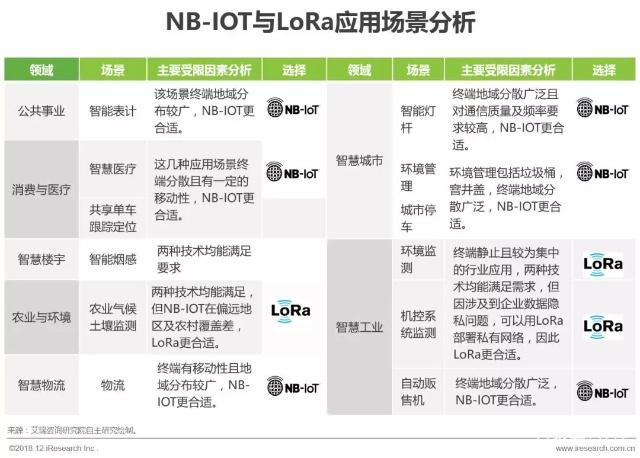
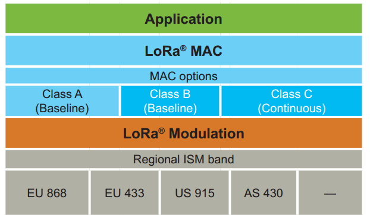
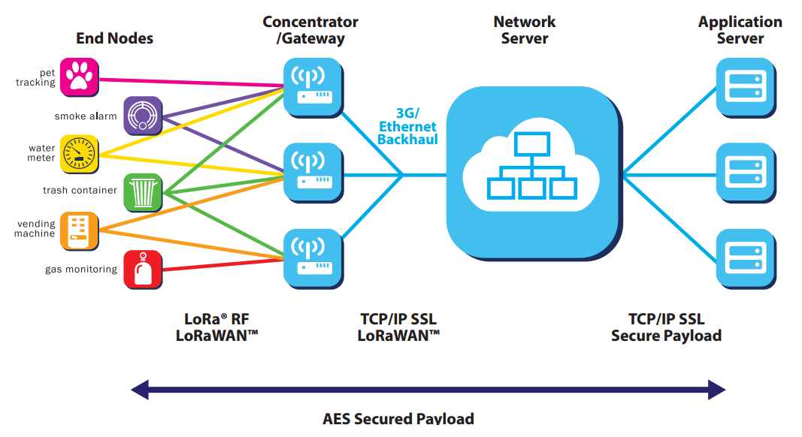
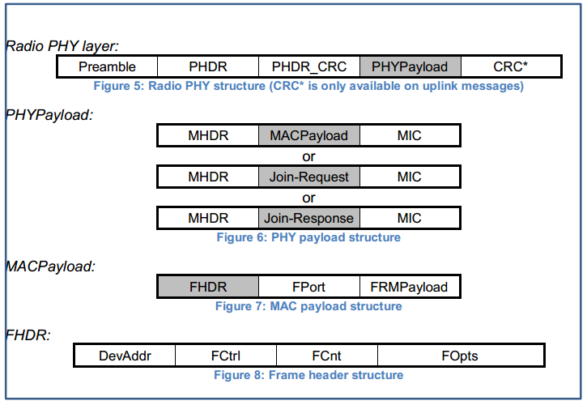
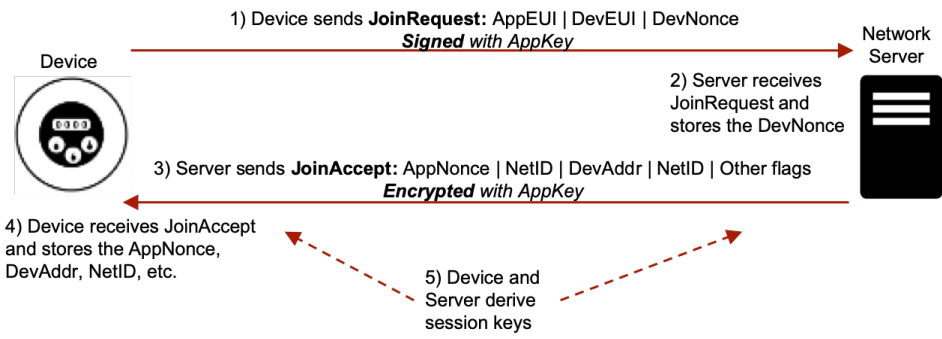
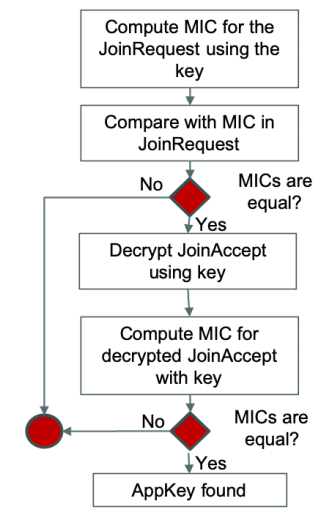
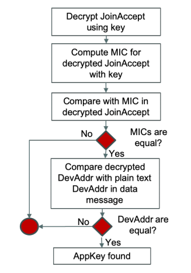
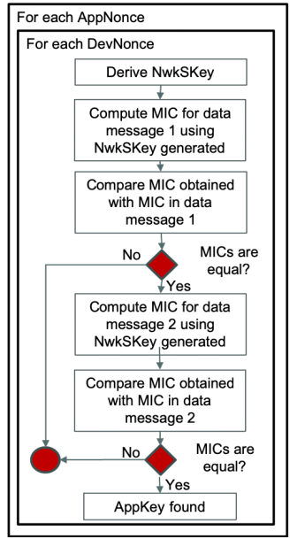
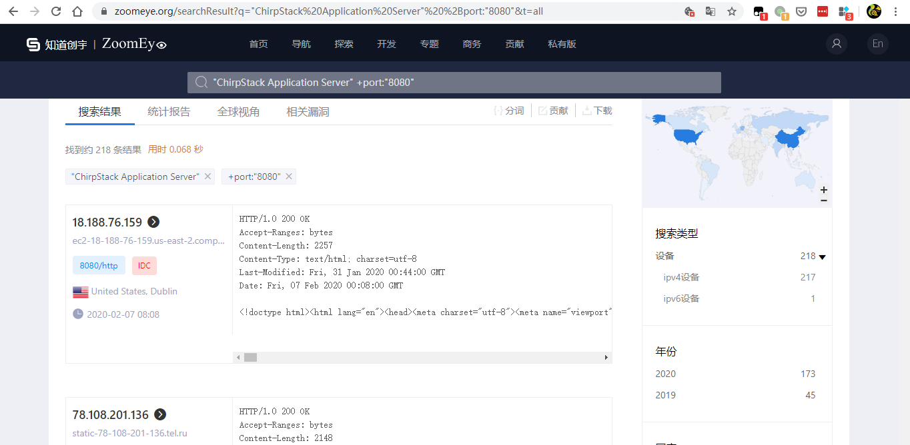
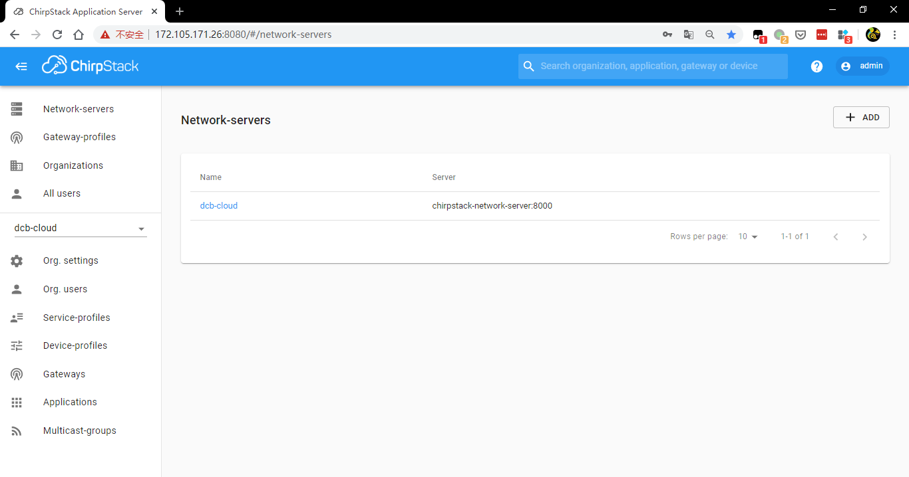

LoraWAN 1.0.3 安全综述
LWPAN
LPWAN（low-power Wide-Area Network，低功耗广域网）专为低带宽、低功耗、远距离、大量连接的物联网应用而设计。主流的技术有 NB-IoT、LoRa、eMTC、SigFox、RPMA、Weightless等。
NB-IOT 与 LoRa 对比
LPWAN 中 NB-IOT 与 LoRa 使用应用较为广泛。
- NB-IOT 与 LoRa 对比1
| NB-IOT | LoRa | |
|---|---|---|
| 标准制定方 | 3GPP | LoRa 联盟（Semtech所有） |
| 技术特点 | 蜂窝 | 线性扩频 |
| 部署方式 | 与现有蜂窝网络复用 | 独立建网 |
| 自由度 | 低，依赖运营商的基础设施 | 高，自有部署 |
| 最大传输距离 | 城市1-2km，郊区20km | 20km |
| 频段 | 运营商频段 | 470MHz、920MHz、867MHz等 |
应用场景对比2

参考
LoRaWAN1.0.3 安全综述
Long Range (LoRa®) 是低功耗广域网络（LPWAN）技术之一，LoRa 由美国公司 Semtech 制定，属于私有技术。LoRa 采用非授权频段，不同的地区采用的频段也不相同。 LoRaWAN是为LoRa远距离通信网络设计的一套通讯协议和系统架构。它是一种媒体访问控制（MAC）层协议。

| 类别 | 应用实体 | 冲突解决方案 | 优点 | 缺点 |
|---|---|---|---|---|
| Class A（主流） | 电池供电传感器 | 异步ALOHA协议 | 最佳节能 | Server无法唤醒End Node |
| Class B | 电池供电执行器 | 节能并唤醒时延可控 | 复杂，实现代价大 | |
| Class C | 市电供电执行器 | 随时唤醒通信 | 耗能大 |
网络架构

LoRaWAN 采用星星的网络拓扑结果， 网络中存在 4 类网络实体,上图中从左到右分别是：
End Nodes（终端节点）
终端节点通常搭配传感器使用，从环境中采集各种信息，如烟雾、天气等。终端设备在每次发送数据包都需要随机切换信道，以便降低同频干扰和无线信号衰减。
Gateway（网关）
网关用于转发“终端节点”与“网络服务器”的之间的数据。网关与终端节点之间没有进行绑定，同一个节点的数据能被多个接收到，他们之间采用 LoRa RF 传输，国内采用 470MHz 频段。
Network Server（网络服务器）
网络服务器用于把终端节点产生的数据转发给对应的应用服务器吗，并提供对终端节点认证和授权。网关与网络服务器之间使用 TCP/IP 协议栈，采用透明传输。常见的协议有Packet Forwarder（现在被归类为Legacy）、MQTT(主流)、CoAP、Protobuf。
Applicaton Server（应用服务器）
应用服务器根据用户需要而设计，通常包括终端节点数据的展示（数据统计、异常数据告警）以及对节点的远程控制等。
当前使用较为广泛的开源服务器是ChirpStack。
数据传输的过程是：终端节点采集到数据通过 LoRa RF 直接传送给网关，再由网关将数据转发给服务器进行处理。流量上行这个过程也被成为 “uplink”，相反流量从服务器到终端节点的这个过程被成为 “downlink”。
安全机制
LoRaWAN 在设计之初就考虑到了安全问题，定义了两个密钥（NwkSKey 和 APPSKey）。NwkSKey(Network Session Key ) 用于保障终端节点传输到网络服务器之间的数据的完整性；APPSKey(Application Session Key) 用于加密传输的数据，保障终端节点到应用服务器之间的数据的机密性。

下图是 LoRa 的消息帧格式。

MIC(message integrity code）: 消息完整性代码为 4 个字节，用于确保数据的完整性（数据没有被篡改），计算公式如下。
1
2
3
4msg = MHDR | FHDR | FPort | FRMPayload
B0= 0x49 | 4 * 0x00 | Dir | DevAddr| FCntUp or FCntDown | 0x00 |len(MHDR | MACPayload)
cmac = aes128_cmac(NwkSKey, B0 | MHDR | MACPayload)
MIC = cmac[0..3]Dir在 uplink 帧中为 0，在downlink帧中为 1。Frame counter (FCnt) ：一个16位计数器，数据上下行中分别称为 uplink 计数器 和 downlink 计数器，FCnt 设计的目的是，防止重放攻击，即当接受方收到的 FCnt 比之前收到的 FCnt 小，接收方会丢弃这个数据包。
MAC Frame Payload Encryption (FRMPayload): 如果数据帧携带有 payload，在计算 MIC 之前，需要使用 AES 进行加密，以保障数据的机密性。
设备激活
终端节点在加入 LoRaWAN 之前需要进行激活，也成为入网。入网有两种方式:ABP(Activation by Personalization，个性化激活) 和OTAA(Over-the-Air Activation，空中激活)。
ABP
ABP(Activation by Personalization，个性化激活) 是一种简单的入网机制，DevAddr、NwkSKey和AppSKey 硬编码保存在终端节点中，服务端也保存有这三个删除。这三个参数在整个生命周期中保持不变。这种入网方式不太安全，适合搭建私有网络。
每一个终端节点都有一个DevEUI（Device Extended Unique Identifier，设备扩展唯一标识），最常见的做法是，取MCU的SN（Serial Number，序列号），经过某种算法得到64位的DevEUI。然后根据 DevEUI 采用某种算法得到DevAddr、NwkSKey和AppSKey。如果采用的算法过于简单，能够被攻击者猜解出来，攻击者便可以利用这些值伪造出虚无的终端节点。
OTAA
OTAA(Over-the-Air Activation，空中激活) 需要与网络服务器协商产生所需的密钥 NwkSKey 和 AppSKey。

1 | AppSKey = AES(AppKey, 0x1 + AppNonce + NetID + DevNonce) |
- AppKey：AppKey 是一个128位的 AES-128 key 。
- DevNonce (JoinRequest) 和 AppNonce (JoinAccept) ：是入网中引入的两个随机数，用于抵御重放攻击。
- Network Identifier (NetID) ：在同一个LoRaWAN 中 所有的终端节点共享一个 NetID。
- End Device Address (DevAddr) ：1个32位的标识，在当前网络中的终端节点唯一标识，相当于会话ID。
LoRaWAN v1.1 中的安全改进
- 从 Network server 中独立出了 Join Server ，用于生成和管理密钥。Network server 不在处理 AppSKey 。
- 新加入了一个根密钥 NwkKey ，现有两个根密钥 AppKey 以及 NwkKey。
在网络层和应用层使用独立的随机数，位数从 16 位提高到了 32 位。
会话密钥从 2 个增加到 5个。
安全风险与威胁
LoRa 声称是一个安全的物联网协议，也得到了广泛的应用。LoRa 安全更多的是密钥的安全。密钥可以通过以下几种方式获取。
通过逆向从固件中获取
使用UART或者SPI 接口通过监听或者伪造 MCU 与 LoRa 模块的通信；充设备中提取出固件，或从互联网上获取到固件，然后逆向分析出密钥；
设备标签
不少设备上的标签以文本或二维码记录着DevEUI、AppKey 等敏感信息，如果部署后没有移除，攻击者通过物联接触能够轻松获取到。
硬编码在开源代码中
在开源代码中的密钥未经修改直接应用到产品中。
易猜解的密钥
厂商在设计时，使用过于简单的算法来实现，容易被攻击者猜解出来。例如，AppKey = DevEUI + AppEUI or AppKey = AppEUI + DevEUI、 AppKey = DevEUI 、所有的设备采用相同的 AppEUI 等。
网络服务器中使用默认密码或弱口令
使用 shodan 或 zoomeye 等检索出暴露在互联网上的网络服务器，不少的服务器使用了默认密码，如 admin:admin。攻击者可以在登录后获取到密钥
服务器存在安全漏洞
服务器操作系统或者其他组件存在安全漏洞被入侵也可能导致密钥的泄露。
设备商被攻击
设备商的网络被攻击导致密钥泄露。
设备/设施部署机制
部署时常用计算机、手机APP或其他专用设备进行配置，密钥可能在部署后残留在部署的计算机、手机或其他专用设备中。
文件泄露
设备制造商通常把密钥存储在文件中，并通过邮件等方式分享给客户。这些文件被多人经手或因管理不当导致密钥文件泄露。
服务提供商信息泄露
网络服务器与应用服务器中存储有 APPKeys，密钥可能以文件形式被备份或保存在数据库中等。服务提供商数据泄露可导致用户的密钥被泄露。
离线密钥攻击
Appkey 可以使用字典进行暴力破解，实现攻击有以下几种方式：
使用一个 JoinRequest 以及 一个JoinAccept 或者 两个JoinRequest/JoinAccept 消息
通过计算并对比入网消息中的 MIC 来寻找 appkey。

首先使用字典中的 Appkey 计算出 MIC， 然后和 JoinRequest 消息中的 MIC 进行对比。如果 MIC 相同，这个 Appkey 可能真正的 Appkey，还需要进一步确认，因为 MIC 是取得前 4 个字节可能存在碰撞问题（不同的 Appkey 计算出相同的 MIC）。还需要进一步验证，使用这个 Appkey 按照下面的算法解密 JoinAccept 得到MIC。
1 | aes128_decrypt(AppKey, AppNonce | NetID | DevAddr | DLSettings | RxDelay | CFList | MIC) |
最后，把之前计算出 MIC 与解密出的 MIC 进行对比。如果相同，Appkey 就被找到了。
使用两个JoinRequest/JoinAccept 消息的方法也相似，首先使用字典中的 Appkey 计算出 MIC， 然后和 JoinRequest 中的 MIC 进行对比。不过这时需要执行两次，如果有同一个 Appkey 计算出的 MIC 与 两个 JoinRequest 消息中的都相同，Appkey 就被找到了。使用两个 JoinAccept 消息唯一不同的需要解密出 MIC 然后对比。
使用一个 JoinAccept 消息和 一个数据消息

使用 Appkey 解密JoinAccept 消息得到 MIC 与直接计算的 MIC 相同，这个 Appkey 可能是真实的 Appkey。还需要进一步确认，对比 JoinAccept 消息中解密得到的 DevAdr 与 数据消息中明文的 DevAddr ，如果相同这个 Appkey 就是正确的。
使用两个数据消息
下图是，通过遍历 DevNonce and AppNonce 来验证 Appkey 和 NetID 的过程。

使用这种方法效率很低，需要暴力破解出 DevNonce 、AppNonce、Appkey 以及 NetID。但是可以用来验证是否使用了脆弱的 Appkey（开源产品应用的或泄露）。
密钥的其他问题
- 在许多场景中，同一组设备往往使用相同的密钥。
- 在不部署时，没有替换默认的密钥，IOACTIVE 整理了一份字典。
- 密钥不可更改，一旦密钥被攻陷，将无法进行修补。
在攻陷密钥后可执行的攻击方法
拒绝服务攻击
发送大于真实 Fcnt 的 uplink 消息
根据协议规范，服务器会拒绝接受 Fcnt 小于上次收到的 FCnt 。如果拥有会话密钥的攻击者发送一个大于真实设备的 FCnt 给服务器，那么真实的消息将会被拒绝接受。
重新生成会话密钥
攻击者伪造 JoinRequest 请求发网络服务重新发起入网请求，产生了新的会话密钥，旧的会话密钥将失效。真实的设备节点使用旧的会话密钥生产的数据就会被服务器拒绝。
发送有效的 MAC 命令
协议中定义了，MAC 命令用于网络管理，包含射频同步、信道管理、定时设置等。通过 FOpts 字段可以对通信的参数设置。攻击者可以伪装终端节点发送消息修改通信参数，当两端的通信参数不同时，通信将会受到影响。
发送虚假消息
这是最为严重的情况，攻击者在获取到密钥后可以伪装成终端节点给服务器发送伪造的数据。在特殊敏感的场景中将会带来巨大的危害，如误报天然气管道气压，对天然气管道进行物理破坏，主营方没能及时发现修复，给企业带来经济损失，给环境带来破坏甚至可能发展成灾难等。
防御：审计与入侵检测
密钥生成规则要健壮，不易被攻击者猜解出来；
需要加强的密钥管理，防止密钥泄露；
在网络中添加入侵检测模块
可以通过持续检测 FCnt 的值来检测攻击，这是因为攻击者发送伪造的消息或发起拒绝服务攻击， FCnt 的值会出现异样，在收到攻击者的消息后，真实中单节点发出的 FCnt 会小于等于攻击者发出的。
通过分析流量，识别是否有同一设备出现平行会话的情况（devAddr），此时可能是攻击者通过重新入网发起了拒绝服务
此外，还可以进一步分析数据中被丢弃的数据包被丢弃的原因来实现入侵检测。
尽量采用 OTTA 入网，因为使用 ABP 入网的终端节点中固化了密钥，密钥很容易被窃取。
相关信息
运营商
Loriot、TheThingsNetwork、Sertone、Archos PicoWan
常见芯片
SX1301/SX1272/SX1276
开源服务器
ChirpStack Application Server
参考
- LoRaWAN介绍
- What is LoRaWAN
- LoRaWAN® 1.0.3 Specification
- LoRaWAN Networks Susceptible to Hacking
- https://github.com/IOActive/laf
LoRaWAN 安全实践
抓包分析
待实现
入侵检测
待实现
服务器使用弱密码
使用 zoomeye 搜索暴露在公网的开源服务器 —— ChirpStack Application Server，查询到 218 个，不少服务器使用了默认的账号 admin/admin。

